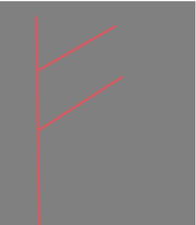

フェオ

文字そのものの意味も呪術文字としても財産にまつわるものであるため同一性が強い。豊穣神でもあるフレイ＆同じく動物に姿を変えられるフレイヤが多産の豚を聖獣とする。豚は家畜であり財産である。ゆえに呪術の対応である豊穣、占いの意味である財産、動物に変身つまり獣に変身するため獣という要素が当てはまるのではないかと考える。 神性・元素・樹木の項目が火つまり赤いものにまつわるため、色が明るい赤とされているのではないかと考える。